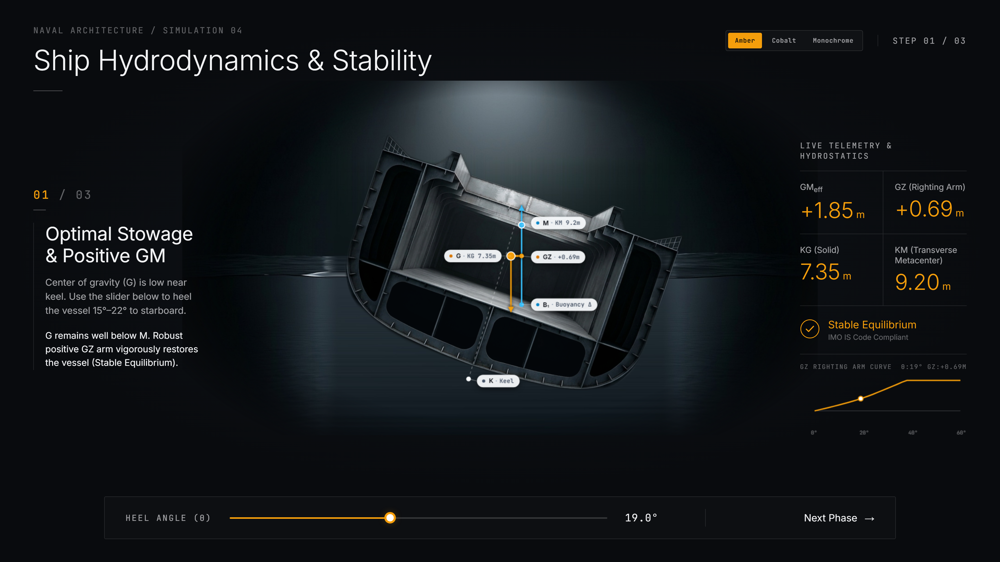

Launch Simulator ↗
PHYSICS SIMULATION
CANVAS · GSAP
Ship Hydrodynamics & Intact Stability Lab
Real-time naval architecture engine computing GZ righting arm curves, center of gravity shifts, internal ballast tank sloshing (Free Surface Effect), and unstable Angle of Loll thresholds.